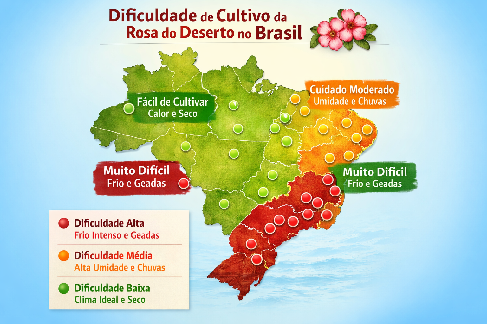

Rosa do Deserto: cultivo, comércio e conhecimento
Plante, forme, valorize e comercialize com mais segurança. Reunimos o essencial do cultivo em uma home mais objetiva.
Aprenda o Básico em Vídeo
Comece pelo essencial: um vídeo rápido com a base correta do plantio e manejo inicial.
Introdução ao cultivo correto
Veja os fundamentos para reduzir erros no início: escolha do vaso, substrato drenante, rega equilibrada e adaptação ao clima.
Ir para PlantioMapa do Brasil - Clima e Cultivo
Interaja com o seu estado para receber indicações de temperatura, umidade, dificuldade e sugestões de substrato.

Resumo: o que é a Rosa do Deserto?
A Rosa do Deserto é uma planta ornamental de forte apelo visual, conhecida pelo tronco engrossado, flores expressivas e potencial de valorização no mercado de colecionáveis.
Seu bom desempenho depende de luz abundante, substrato bem drenante e rega controlada. Quando o manejo é correto, ela entrega beleza, longevidade e ótimo valor ornamental.
Nesta página inicial, o foco ficou em orientar, mostrar produtos e organizar o caminho de aprendizagem sem repetir blocos desnecessários.
Modelos e Valores
Carrossel com diferentes modelos de Rosa do Deserto, organizados por perfil visual e faixa de preço.
.jpeg)
Rubra Clássica
R$ 135,00
Modelo clássico para quem busca entrada sólida no cultivo e boa aceitação de mercado.
.jpeg)
Branca Elegance
R$ 158,00
Variedade equilibrada, elegante e indicada para linhas ornamentais mais refinadas.
.jpeg)
Sunset Premium
R$ 182,00
Exemplar de perfil premium com presença visual mais forte e maior valor agregado.
Amarela Colecionável
R$ 210,00
Modelo para catálogo diferenciado, indicado para público colecionador e venda premium.
Jornada de Aprendizado
Uma trilha única para sair do plantio básico e chegar ao manejo técnico e comercial.